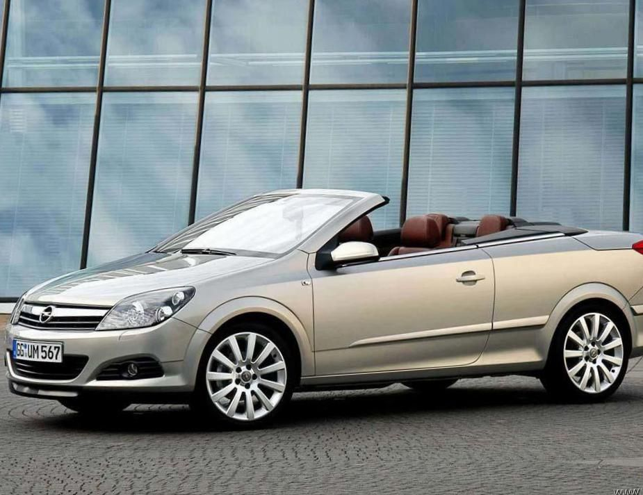
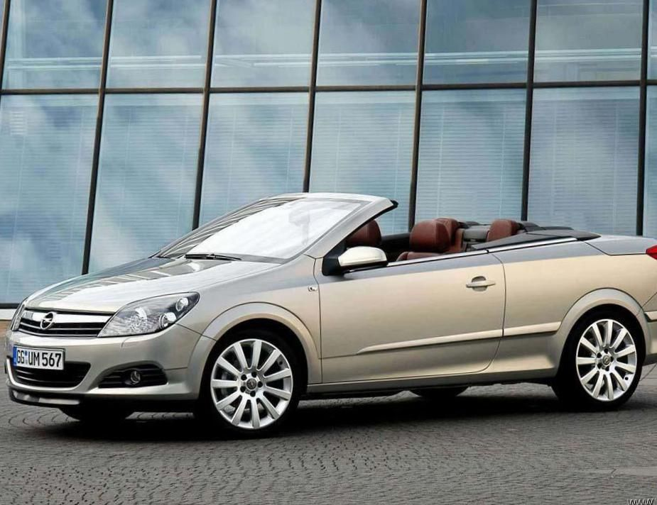

Opel Astra’nın İsim Geleneği
2006 yılı itibarıyla üç farklı jenerasyon Opel Astra bulunmaktadır. Opel modellerinin isimleri, latin alfabesindeki harfler kullanılarak oluşturulmuştur. Opel’in amacı, Opel Astra’nın ilk jenerasyonu olan Kadett, bir diğer adıyla Opel Astra F geleneğini devam ettirmektir. (Son Kadett jenerasyonu, Kadett E’dir.)
Astra F
Astra F, ilk olarak 1991 yılında piyasaya çıktı. Opel; Kadett E’nin isim varisi olarak, halihazırdaki Vauxhall’un Kadett D ve E modelerinde kullandığı Astra ismini kullanmaya karar verdi. Astra F; 3 veya 5 kapılı hatchback, sedan ve karavan adıyla da anılan station wagon kasa alternatifleriyle piyasaya sunuldu. Bunun yanında, İtalya’da ünlü tasarımcı Bertone tarafından dizayn edilen bir cabrio model de tüketicilere sunuldu. Bu cabrio model, Türkiye’de de olduğu gibi, 1998-2002 yıllarında Astra Classic olarak isimlendirildi. Merkez ve Doğu Avrupa ülkelerinde satışa sunuldu. Astra F’nin üretimi, 2002 yılında son buldu. Model; Güney Afrika’da, Delta adı altında 1992 yılında üretilmeye başladı. Bununla birlikte Kadett ismi, 1999 yılına kadar Astra Hatchback modelleri için kullanıldı. Güney Afrika’daki sedan ve hatchback Astra’lar, daha sonra, 200tS adı verilen, sınırlı sayıda üretilen 2.0lt turbo şarjlı motor seçeneğiyle satışa sunuldu. 200tS’deki motor (C20LET), Avrupa pazarında bulunan Calibra 2.0lt turbo 4WD’dan örnek alındı. Mühendisler de bu motora önden çekişli 6 vites seçeneğini ekleyerek, modeli pazarda oldukça değerli bir hale getirdi. Bu modelin Sedan ve Station wagon modelleri de Astra adı altında tüketiciye sunuldu. Tartışmalı bir şekilde Kadett ve Astra; Güney Afrika’da, aynı otomobilin versiyonları olmalarına rağmen, 1993 ve 1994 yıllarında art arda “Yılın Otomobili” ödülünü aldılar. Güney Afrika'daki Astra ve Kadett’ler; 140, 160i, 180i and 200i seçenekleriyle sunuldu. Vauxhall Astra F'in daha önceki modeli Astra, ilk olarak 1995 yılında Yeni Zelanda’da ve ardından 1996 yılında Avustralya’da olmak üzere Avustrasya’da da Holden ismiyle satışa sunuldu. İlk model, Büyük Britanya’dan ithal edildi ancak yaygın olarak tercih edilen model, Belçika’dan ithal edildi. Orijinal Holden Astra, ilk defa 1980’lerin ortalarında Nissan Pulsar adıyla satıldı. Opel Astra'nın ilk jenerasyonu Brezilya'ya ihraç edildi. Brezilya'nın Chevrolet'si, 2.0lt 115HP motor seçeneğiyle Belçika'ya gönderildi. Brezilya hükümeti, 1996 yılında ithalat miktarını artırdı ancak model hala çok pahalıydı. Bunun üzerine modelin Ikinci jenerasyonu Brezilya'da üretildi. Astra F; 1995 yılında Opel'in yeni ECOTEC motorunun piyasaya sürülmesiyle iki ana yeniliğe imza attı. Kısa bir süreliğine, iki ana yeniliği de üzerinde taşıyan alt bir model piyasaya sürüldü. Bu alt modelde, ECOTEC motor sisteminin yenilikleriyle beraber elde kalan diğer parçalar da kullanıldı. Yapılan diğer yenilikler; dış görünüşteki hafif değişiklikler ve kullanıma uygun yeni modellerdi. Güney Afrika'daki 200tS modeli dışında ana model; 3 kapılı, 2.0lt 16v benzinli 147 bhp'lik GSi modeliydi. Bu model adı, sınırlı sayıda üretilmesine rağmen 1995-1996 yılları arasında Astra Sport olarak değiştirildi. Astra Sport, spor görünümlü gövdeye ve iç tasarıma sahipti. GSi modeli, daha düşük güce sahip ama çok daha yeni bir teknoloji olan ECOTEC motoru da içeren yeniliklerle 1997 yılına kadar yenilendi.
Astra G
Opel Astra ilk olarak Nisan 1998'de Avrupa’da piyasaya sürülmesine karşın otomobilin taslağı, 1992 yılının ilk zamanlarında başladı. Astra, arka kısmı kısa ve küt olan; 3, 4, 5 kapı ve diğer 2 özel versiyonu olan, Bertone tarafından tasarlanan Astra Coupé ve Astra Cabrio ile birlikte piyasaya sunuldu. Astra G/B aynı zamanda doğalgaz sistemiyle çalışan otomobil özelliğini de taşımaktaydı. Gövde kısmı Lotus tarafından uyarlanmış, oluşumunda 7 koltuklu Kompakt MPV ve Opel Zafira’nın etkisi olmuştur. Astra G/B nin üretimi, GM Polonya’nın Gliwice şehrinde devam ederek, bir sonraki jenerasyon Astra H/C nin üretimine başlandıktan sonra, aynı zamanda eski bir model olan, atalarının benzeri Astra Classic ile piyasaya sunuldu. Avrupa piyasasının yanı sıra bu modeller, aynı zamanda Avustralya ve Yeni Zelanda’da Holden Astra Classic olarak, 2006 yılında çıkarılan Holden Viva’ya kadar satılmaya devam etti. Astra G/B’nin satışı daha sonra, Brezilya’nın yerel üretimi olan Chevrolet Astra ile devam etti. Nisan 2003'te ise yenilenerek Brezilya, Arjantin, Meksika ve diğer Latin Amerika pazarlarında satışa sunuldu. Astra G/B, 1999 yılından bu yana Brezilya pazarında lider olma özelliğini koruyor. Brezilya’daki Astra’ların 2.0 8V L4 (Sekiz subab-valf düz sıralı 4 silindir) motoru, 5200RPM’de 128/140HP sağlayan, hem benzin hem alkol yağı taşıyan “flexpower’’ teknolojisini de taşımaktadır. Brezilya üretimli bir diğer Astra modeli de; dizel motorlu taksi versiyonu olan ve Şili’de satışa sunulan, Chevy Urban gücüne sahip Chevy Taxi. 2004 yılında, GM’in Rusya’da yaptığı yatırım ile Chevrolet Viva, Astra G/B’nin 4 kapı versiyonu olarak piyasaya sürüldü. Opel, yeni model Opel Astra H/C’nin satışı ile ilgilenirken, Astra G/B Chevrolet Rusya temsilcileri tarafından satışa sunuldu. Yüksek fiyatlar nedeniyle satışlar ilk zamanlarda düşük olsa da, orta standartlarla donatılmış 1.8L Astra G/B, Toyota Corolla’nın yerini aldı.
Astra H
General Motors Astra H, 2 Ağustos 2003'te ilk duyurusu yapılmış, 2 Mart 2004'te satışa sunulmuştur. Yeni Delta platform baz alınarak üretilen Astra’nın boyutları, bir önceki versiyonuna göre daha büyüktü. Her motor, Lotus tarafından ayarlanan süspansiyon desteğiyle üretilmişti.
5 kapılı karavan ve 3 kapılı hatchback spor modellerinin arasına katılan Astra H/C, ilk 5 kapılı üretilen araba özelliğine sahip oldu. Bunun yanında Astra GTC Avrupa pazarında, Astra Sport Hatch İngiltere’de ve Astra Coupé'de Avustralya’da satılmak üzere seçildi. GTC; “Panoramik Ön Cam“ denilen, arabanın üst kısmına kadar giden ön cam seçeneğine sahipti.
Astra Vauxhall, çeşitli İngiliz ve Alman polis birimlerinde kullanılan popüler bir arabadır.
Brezilya’daki Chevrolet Vectra, Sedan Opel Astra C’nin bir ikizi gibidir.
GM; ilk olarak Latin Amerika’da Astra H/C’yi üretmek yerine, bir önceki modelinde yenilik yapmaya karar verdi. Ancak bu karar Meksika ve Şili’de uygulanmayıp, onun yerine Avrupa’dan gelen Delta bazındaki model satışa sunuldu. (2006’dan itibaren) 2005 yılında GM Brezilya; Vectra B’nin yerine üretilmiş olan, Zafira modelinin de daha üstünde, Astra C’nin sedan versiyonu olan Chevrolet Vectra’yı piyasaya sürdü. 19 Ekim 2006’da İstanbul-Türkiye’de yapılan Autoshow’da Opel; Gliwice-Polonya’da üretilmiş olan bu sedan versiyonu Avrupa’nın birçok ülkesinde piyasaya sürmek üzere gözler önüne serdi. Aynı zamanda 3 kapılı vanın değişik vagon tipi modeli de Vauxhall adıya İngiltere’de alıcılarına tanıtıldı. 2007 Eylül’de GM Brezilya, 5 kapılı Astra C Hatchback’in satışa sunulacağı duyurusunu yaparak, piyasada bulunan Astra G/B’den farklı olarak Chevrolet Vectra GT’yi piyasaya sürdü.
Astra Sedan, 2008 yılında Opel Astra Saloon adı altında Batı Avrupa’da yalnızca İrlanda’da, ilk defa sağ taraftan sürüş özelliğiyle piyasaya sunuldu.
GM Rusya, Astra ailesinden olan SKD modelini yılda 25,000 adet üretmek üzere 2008 Şubat ayında Sankt-Peterburg’da piyasaya sundu.
Avrupa’daki arabalar içerisinde bir ilk olarak dijital radyoya sahip olan Astra’nın bazı versiyonları, ayrıca ilk defa Sürekli Süspansiyon Kontrol Sistemi (CDC) ve Sürüşe Duyarlı Ön Far (AFL) sistemlerini de kullanan versiyonlar oldu. 2005 yılında, yeni Opel Astra dizel-elektrik karışımı piyasada yerini aldı. 2005’in sonlarına doğru ise estate ve coupé versiyonları da üretilmeye başlandı. 2008 yılında Opel Astra’nın satışına, Amerika ve Kanada’da da Saturn Astra adı altında başlandı.
Astra TwinTop
2006 yılında Astra TwinTop piyasaya çıktı. TwinTop ismi, Astra’nın açılabilen tavanlı bir coupé modeline işaret ediyordu. Astra’nın bu coupé modeli, tamamen açılabilen ve açıldığında bagajın içine giren bir tavana sahipti. Astra TwinTop, 4 koltuklu ve arka koltuk alanı normal Astra’ya göre daha küçük olarak hala satılmaktadır. Bunun yanında, 200PS (147 kW; 197HP) 2.0lt turbo, 1.6lt atmosferik, 1.6lt turbo ve 1.9lt CDTi dizel motorları da kapsayan üç farklı motor seçeneğiyle satışı yapılmaktadır.
Astra J (2009-2020)
2009 yılında piyasaya sürülen Astra J,GM'nin Delta 2 platformu üzerine inşa edilmiştir.Delta 2 platformunu kullanan ilk model ise platform ikizi Chevrolet Cruze'dur.Tasarım olarak Opel'in Bıçak Konsept'i anlayışını benimsemiştir. Bu tasarım anlayışı ilk kez Opel Insignia ile tanıtılmıştır. Süspansiyon olarak önde MacPherson,arkada torsiyon ve torsiyona ek olarak Watt's Linkage sistemini kullanmaktadır. Bu sistem yol tutuşuna büyük oranda fayda sağlamaktadır. Türkiye'de dört farklı donanım paketiyle satılmaktadır. Bunlar; Edition (Baz), Enjoy Active, Sport ve Cosmo'dur motor yelpazesi beşi benzinli, ikisi dizel olan altı ayrı üniteden oluşmaktadır. Bunlar;1.6 litre 115 HP Atmosferik, 1.4 litrede 120,140 beygirlik üniteler(Üniteler aynı olmakla birlikte sadece beygir güçlerinde farklılıklar mevcuttur.) 1.6 litrede 180 HP, 2.0 CDTI 195 HP, 1.6 CDTI 110 ve 136 beygir gücüne sahip ünitelerdir. Ek olarak 2.0 280 beygirlik OPC versiyonu bulunmaktadır. Opel Compact (küçük aile otomobili) sınıfta 1.6 motor 180 beygir gücünde ünite kullanarak devrim yaratan ilk markadır. 2012 Eylül ayında,tasarımı makyajlanarak güncellenmiştir.
Astra K
Opel , 2016 model yılı için Eylül 2015'te Frankfurt Motor Show'da Astra K'yı piyasaya sürdü .
Astra K, Astra J'ye kıyasla daha küçük (5 cm) ve daha hafiftir (200 kg'a kadar). Dışarıdan daha küçük olmasına rağmen, Opel, önceki Astra J'den daha büyük olduğunu iddia ediyor. Modele ve donanım seviyesi, selefinden 200 kilograma kadar - en az 120 kilogram - daha hafiftir. Tamamen yeni araç mimarisi, ağırlığın azaltılmasında önemli bir rol oynuyor. Her bileşen, kompakt tasarım ve hafif malzemeler açısından kontrol edildi. Tek başına gövde ağırlığı, 357 kilogramdan 280 kilograma yüzde 20 düşürüldü. Şasi ile ilgili ek önlemler, 50 kilogram daha ağırlık azalmasıyla sonuçlandı; bunlar arasında yüksek mukavemetli ve ultra yüksek mukavemetli düşük ağırlıklı çelikler, kompakt alt şasiler ve ayrıca ön ve arka aksta yapılan ağırlık azaltmaları yer alıyor. Arka süspansiyon burulma kirişidir(sadece üst motorlarda Watts bağlantısı ile) ve öndeki MacPherson gergiler .
Astra L
Altıncı nesil Astra, 13 Temmuz 2021'de tanıtıldı ve 12 Kasım 2021'de satışa sunuldu. [67] PSA Group tarafından geliştirilen ilk Astra olarak , [68] dingil mesafesini oluşturan üçüncü nesil EMP2 platformunu temel alıyor. 55 mm (2,2 inç) büyür. FCA ve PSA operasyonlarının Stellantis'i oluşturmak üzere birleşmesinden on ay sonra piyasaya sürülen araç, ilk kez bir hibrit olarak sunuldu ve 180 beygir gücünde bir motor ortaya çıkaracak. Peugeot 508 ve Peugeot 3008'den alınan 225 beygir gücündeki versiyon, GT versiyonunda da satışa sunulacak.